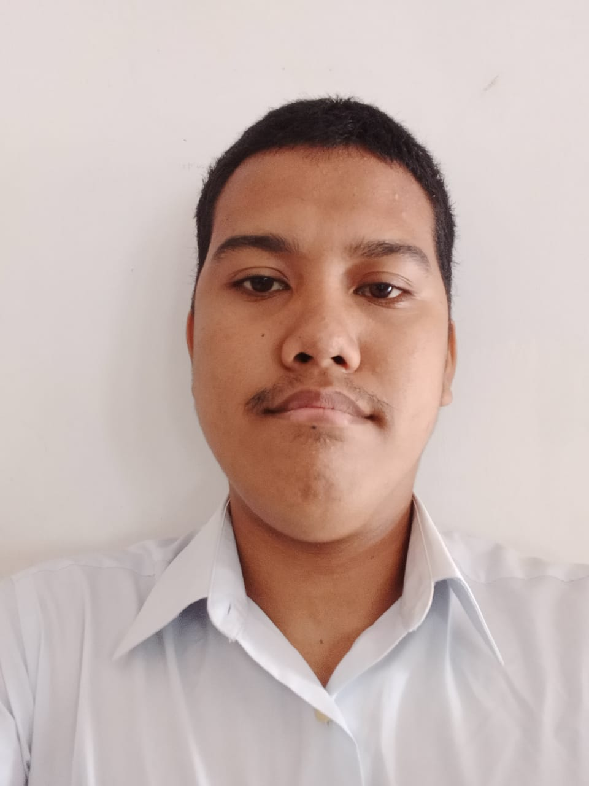

Disetujui Oleh:
Pematangsiantar, 16 Agustus 2022
Penasehat Akademik,
Mahasiswa
Dr. M. Safil, M.Kom
David Ronaldo Hutajulu
Disahkan Oleh:
Ketua Program Studi Teknik Informatika
Dr. Solikhun, M.Kom
Dibuat Rangkap 2:
Pendidikan